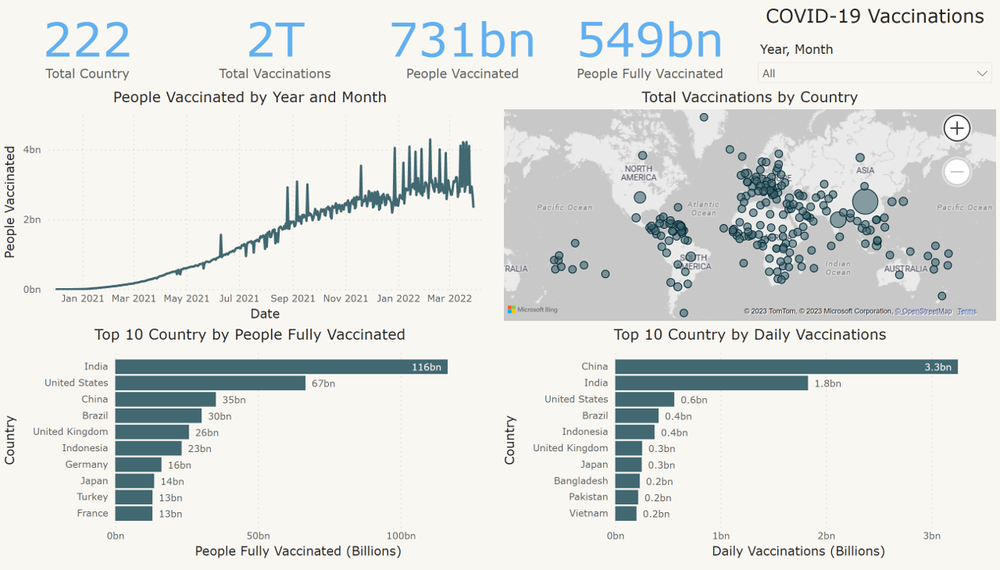

Faster dashboards
Reduced Power BI dashboard load times for business users.
Hi, I'm Tilakraj Puthran — a Senior Business Intelligence Analyst & Power BI Developer with 7+ years building fast, governed reporting across finance, retail, telecom, entertainment and grocery.
Measured outcomes from enterprise BI work — performance, pipelines and reliability, not just visuals.
Reduced Power BI dashboard load times for business users.
Cut SQL query execution time through query tuning and indexing.
Improved reporting speed via Snowflake ETL.
Maintained SLA compliance on deliveries at Winman Software.
Moved a Sales Trend dashboard from a third-party BI tool to Power BI, rebuilding the model, measures and visuals in Power BI.
Guided junior developers on Power BI, DAX and data-modelling practices.
Seven years across product, services and enterprise analytics teams.
Domains: Group Finance · Retail · Grocery · Telecom · Entertainment · Ways of working: stakeholder management, Agile delivery, mentoring
Personal projects built on public datasets — client work stays confidential, so these show my approach in the open.

Diagnosed why AtliQ was losing market share in luxury/business hotels — revenue, occupancy and booking-platform trends for the revenue team. Codebasics Challenge #1.

Credit card spending habits across India from 2013–2015, turning raw transactions into clear spending patterns.

Vaccination progress across countries, demonstrating data cleaning, modelling and visual storytelling.
Global COVID-19 data explored in SQL Server — cases, deaths and vaccination trends across countries.
Whether it's slow reports, a messy model or a migration to Power BI — I'm always happy to talk data.